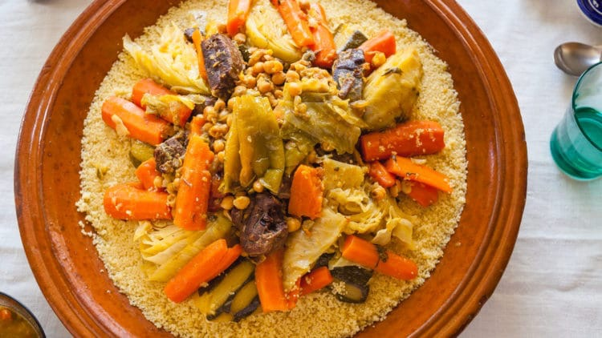

Algerian Couscous

Description
Algerian couscous is a hearty North African dish made with steamed semolina, slow-cooked vegetables, and tender lamb or chicken in a rich, spiced broth.
It's a staple of Algerian cuisine, traditionally served on Fridays and at family gatherings.
Ingredients
- 500g couscous semolina
- 500g lamb or chicken pieces
- 2 carrots, chopped
- 2 zucchini, chopped
- 2 potatoes, quartered
- 1 can chickpeas
- 2 tomatoes, diced
- 1 onion, chopped
- 2 tbsp olive oil
- 1 tsp cumin, cinnamon, turmeric
- Salt and pepper to taste
Steps
- Brown the meat with onion and olive oil in a large pot.
- Add spices and stir for 2 minutes.
- Add tomatoes, cover with water, and simmer 30 minutes.
- Add carrots and potatoes, cook 15 more minutes.
- Add zucchini and chickpeas, cook 10 more minutes.
- Stesam couscous according to package instructions.
- Serve couscous topped with vegetables and broth.
Home